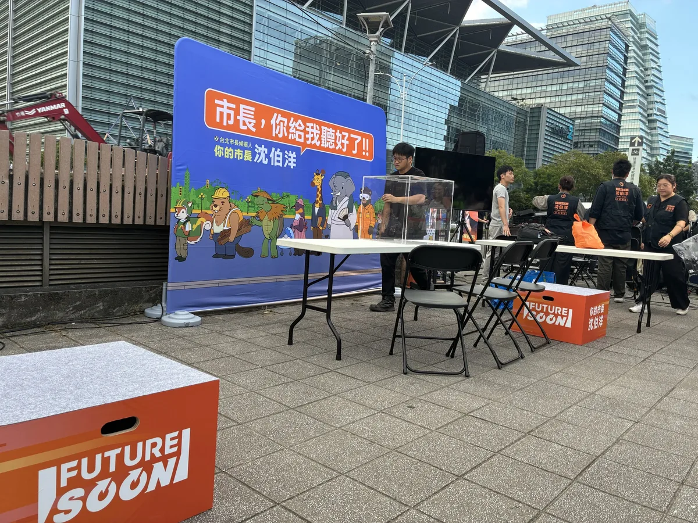
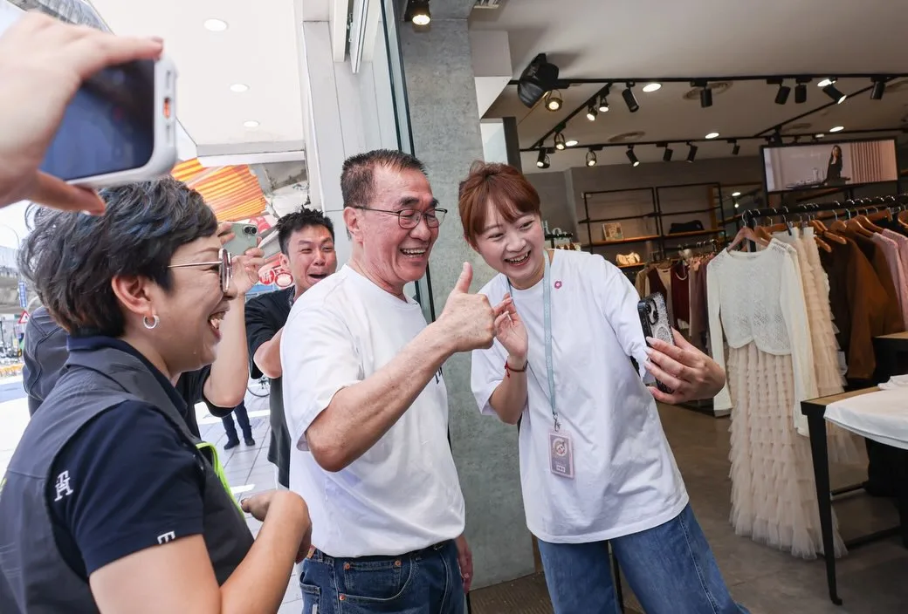

蘇巧慧chiaohui.su

巧慧的 #山友後援會 正式成立！ 新北有最豐富的山林和海洋資源，未來我會為新北的山林步道 #分級分眾，增加大眾運輸班次， #縮短大眾登山轉乘的時間；同時將登山活動與老街商圈、歷史人文景點共同串聯，結合登山也 #振興地方商圈。最後，我也會 #打造山林教育中心，作為山友的集訓場地，真正向山致敬。 未來我擔任市長，會從各方面縮短交通接駁、升級硬體設施，打造「新北大縱走」品牌，讓台灣的孩子越來越喜歡山，越來越懂得敬山，越來越親近山！
Posts
巧慧的 #山友後援會 正式成立！ 新北有最豐富的山林和海洋資源，未來我會為新北的山林步道 #分級分眾，增加大眾運輸班次， #縮短大眾登山轉乘的時間；同時將登山活動與老街商圈、歷史人文景點共同串聯，結合登山也 #振興地方商圈。最後，我也會 #打造山林教育中心，作為山友的集訓場地，真正向山致敬。 未來我擔任市長，會從各方面縮短交通接駁、升級硬體設施，打造「新北大縱走」品牌，讓台灣的孩子越來越喜歡山，越來越懂得敬山，越來越親近山！


原本受邀到台中海線，為何欣純加油打氣的 蕭美琴 Bi-khim Hsiao 副總統，受到國際社會邀請，必須出國為台灣拚外交，所有鄉親都高度肯定支持！ 這個周六9/19，感謝美琴副總統，再次來到台中屯區，阿純誠摯邀請鄉親好朋友，作伙來給美琴副總統鼓勵、逗陣相挺何欣純、為台中加油！ 🕤️時間：9/19（六）上午9：30 🌏️地點：大里新興宮(八媽廟)大里區新仁路2段162號


最近的新聞讓你霧裡看花嗎？各種議題吵得沸沸揚揚，到底真相是什麼？ 今晚的《雄好講》，柯志恩的發言人們將上線和大家聊聊近期的熱門時事！ 不打高空、只講真話，針對大家最關心的議題，我們直接線上回應。

明天一早，我跟桃園隊的夥伴，會在市民的上課上班路上，杰伴跟大家問好！ 歡迎經過的市民朋友跟我們打招呼喔👋 🔺時間｜9/18（五）07:30 🔺地點｜桃園區 民族公園前（永安路、三民路口對面）

蔡其昌總召喊話 台中需要改變！給何欣純一個解決問題的機會💪

明天和大家相約市場、夜市見！ ⠀ 9/18 （五） ⠀ 09:00 📍成德市場 ⠀ 19:20 📍景美夜市（集合點：景美集應廟）

@prof.kochihen:針對昨日所涉及團隊人員參與告別式相關行為的貼文，謹作以下說明： 第一，關於所謂要求拍照並說「要投給我」的說法，並非事實。相關指控與事實不符，針對該篇不實留言，當事人已刪除貼文，並公開澄清及道歉。期望此事到此為止，也請網友不要以訛傳訛。 第二，關於團隊人員在告別式場合「發名片」一事，經向團隊了解後，確有團隊人員在現場行為失當。團隊人員說明，原意是希望即時提供家屬協助，但告別式是家屬哀悼、送別親人的莊重場合，任何與選舉或政治相關的行為，都不應該。對於這樣的行為，本人認為確實不妥，也已當面告誡相關人員，並要求整個團隊引以為戒、謹言慎行。 選舉有競爭，無論任何場合，都應守住應有的分寸與界線，這是最基本的尊重，也是團隊每一個人都必須遵守的原則。

@a_chun1973:台中需要的，是一個願意捲起袖子、真正解決問題的市長。 謝謝蔡其昌 @tsaimimi0416 主委的支持與鼓勵💪 我會繼續傾聽市民的聲音、回應城市的需要，一步一步把問題解決、把事情做好。 讓台中持續向前，為下一代打造更好的未來！

今天從中壢華勛市場到八德公有市場，走進大家每天採買、吃早餐、話家常的地方，也聽見許多最貼近生活的聲音！ 一早來到華勛市場，沿路和攤商、買菜的鄉親打招呼，收到好多特別的祝福。有人送來鳳梨、粽子、蒜頭，還有可愛的蒜頭吊飾，甚至有支持者特別帶著「杰伴童行」貼紙來合照，大家的熱情讓一早的掃街行程活力滿滿🫶🏻 接著來到八德公有市場，感受市場與周邊居民緊密相連的生活日常。收到鄉親送來蘿蔔和竹筍祝福，結束後我們到在地超過30年的「50巷麵店」，邊吃麵邊聊地方事，來場最在地的早餐聚會。遇到很多市民朋友，大家都是巷仔內的！ 中壢、八德快速發展，人口持續移入，交通問題是居民的日常，捷運建設要如期如質、資訊公開透明，未來我也要把周邊道路、大眾運輸路網規劃好，讓建設真正接上市民每天的生活。大家關心的垃圾費隨袋徵收，在取得充分共識前，我也承諾停止推動。 感謝中壢中壢大姊姊張曉昀議員、魏筠議員、彭俊豪議員、黃崇真 Huang Chung-Chen議員，八德許家睿 Hsu Chia-Jui議員、市議員呂林小鳳議員、蔡永芳 • 阿芳議員候選人服務團隊、福興里姚成達里長、瑞豐里呂學琪里長，以及八德公有零售市場自治會邱秋珍會長一起同行。 心中壢、心八德，杰伴動起來💖

「爸爸我要給你看一個人」一位女兒撥了視訊給爸爸，向他介紹她口中的「川伯」。 今天一早我來到板橋新埔市場，向民眾與攤商問好，有一位小女生看到我，還反應不過來，手就下意識打電話給爸爸，因為她說「你是我爸爸的偶像」。 說實在，我怎麼好意思，電話一接起來是拜託再拜託，謝謝鄉親的鼓勵，我會跑得更賣力。 今天與過去不同，有別於菜頭鳳梨，我拿到最多的是潤喉糖，還有一大瓶杏仁茶，要我潤喉養肺，他們都聽出我的聲音真的沒了。 但你看，板橋鄉親是這麼可愛，對我來說，什麼燒聲一點都無礙。 鄉親們找我拍照，我是滿心歡喜，每張照片都為我與地方的好感情做見證，大拇指比出來，也為我打了分數。 有非常多好朋友，從四面八方過來，用台語對我說「哩一定愛『條』」，國語就是「你一定要贏」，他們的手握的有多大力，期盼就多用力。 我實在開心，板橋鄉親的暖心，讓我越拚越有力。

@su.chiaohui:巧慧的山友後援會⛰️ 正式成立！ 新北有最豐富的山林和海洋資源，未來我擔任市長，會從各方面縮短交通接駁、升級硬體設施，打造「新北大縱走」品牌，讓台灣的孩子越來越喜歡山，越來越懂得敬山，越來越親近山！

@su.chiaohui:海外台商挺巧慧！一起把新北打造成希望之城！ 今天來自世界各地的台商、台僑朋友們齊聚在一起，為我成立「海外台商後援會」，謝謝大家特別回到台灣，在忙碌的行程中撥出時間為我加油！ 未來，我要讓新北變得有趣、友善、有機會！讓更多的海外青年看見新北的山海與地方的故事，並且在這裡找到好的工作、創業與投資的機會，將新北市打造成聯結世界的起點！ 我會繼續努力，讓台灣成為大家的底氣，把新北打造成一座海外年輕人願意回來、也能看見未來的希望之城！

Jinshan Can Be Even Better ft. Vice President Hsiao Bi-khim

青年挺何欣純！打造青年局AI人才研習所 讓台中與國際接軌🤖🌏

鼓山是我的家、高雄是我的家；我想和鄉親作伙實現夢想的未來！ 上週來到 #內惟青雲宮，看著熟悉的里長們、熱情的鄉親們，心裡特別有感，四年前選舉結束後，我曾對自己許下一個承諾：留在高雄，繼續打拚，所以，我把家安在鼓山。 我是鼓山的居民。我喜歡這裡的歷史底蘊，喜歡西子灣、哈瑪星的人文風景，也看見農16、美術館特區帶來的城市轉型。鼓山是高雄最耀眼的門面之一，但我也知道，豪雨一來，鼓山三路泥水漫流；颱風一來，居民擔心淹水、擔心停電。這些問題存在很多年了，市民要的其實不多，就是一個安心生活的環境。 市政最重要的是基本功。治水要做好源頭截流、泥水分流；該推動的電線地下化要加快腳步；讓鄉親不用每逢風雨就提心吊膽。因為政府最基本的責任，就是保護人民免於恐懼。 也特別感謝我的好弟弟 牛煦庭 委員專程從桃園南下相挺。他今天特別跟鄉親分享：每次立法院散會，他總是看我急著趕回高雄、回家跑行程。 原因無他，只因我心繫高雄。 四年前，我用四個月時間拚出53萬票；四年後，我依然站在這裡，和大家一起為高雄努力。我沒有派系包袱，也不追求更高的政治舞台，只希望有機會把高雄顧好，讓孩子有競爭力、讓青年有發展空間、讓長輩活得有尊嚴。 高雄有山、有海、有港、有國際視野。下一步，我們要做的，不只是繼續做夢，而是讓夢想成真。 拜託大家給我一次機會，也給我的好弟弟 下港的囝仔, 蔡金晏、好妹妹 陳美雅，以及所有黨籍議員、里長機會為市民服務，也讓高雄迎來新的改變，重新找回屬於這座城市的光榮。 #鼓山 #高雄 #城市光榮 #讓夢想成真
@pumashen:明天和大家相約市場、夜市見！ ⠀ 9/18 （五） ⠀ 09:00 📍成德市場 ⠀ 19:20 📍景美夜市（集合點：景美集應廟）


@chen_tingfei 🔁:下一階段的台南，年輕人不能缺席！ 10/2 歡迎市民朋友一起來聊聊，跟大家分享我對台南未來的想像，同時也談談青年在這座城市的生活與未來🙌台南400年，第一位女市長要來了✨ 長期深耕台南超過28年的 @chen_tingfei 陳亭妃委員，不僅擔任過3屆市議員和5屆立法委員，近兩屆以來更是台南市最高票的立委，從地方議會到中央國會，一路關注台南的發展。 多年來，她持續關心地方產業、農漁發展與文化觀光，傳統產業轉型希望串聯台南37區不同的文化、觀光與農漁產業特色、科技發展重點，點線面整合各地資源，讓更多人走進台南不同區域、認識在地特色，讓觀光人潮不只停留在市區，更進一步帶動地方產業與經濟發展。 但一座城市的發展，除了產業與經濟持續向前，更重要的還有青年能不能在這裡看見自己的未來。如何讓更多青年找到適合自己的工作與發展機會？面對創業、租屋、職涯選擇等不同挑戰，城市又能提供青年什麼樣的支持？ 如果你也想更了解陳亭妃對台南未來的想像與規劃，以及台南如何成為一座讓青年願意留下、安心生活的城市，歡迎在10/2（五）來熬民主一同交流城市願景，共同思考台南的下一步。 趕快點擊青年部FB及Threads留言處，或IG主頁連結，填寫報名表單完成報名！— @youthdpp — Thu, 17 Sep 2026 04:24:47 GMT

@schuanglawyer:今天從中壢華勛市場到八德公有市場，走進大家每天採買、吃早餐、話家常的地方，也聽見許多最貼近生活的聲音！ 一早來到華勛市場，沿路和攤商、買菜的鄉親打招呼，收到好多特別的祝福。有人送來鳳梨、粽子、蒜頭，還有可愛的蒜頭吊飾，甚至有支持者特別帶著「杰伴童行」貼紙來合照，大家的熱情讓一早的掃街行程活力滿滿🫶🏻 接著來到八德公有市場，感受市場與周邊居民緊密相連的生活日常。收到鄉親送來蘿蔔和竹筍祝福，結束後我們到在地超過30年的「50巷麵店」，邊吃麵邊聊地方事，來場最在地的早餐聚會。遇到很多市民朋友，大家都是巷仔內的！ 中壢、八德快速發展，人口持續移入，交通問題是居民的日常，捷運建設要如期如質、資訊公開透明，未來我也要把周邊道路、大眾運輸路網規劃好，讓建設真正接上市民每天的生活。大家關心的垃圾費隨袋徵收，在取得充分共識前，我也承諾停止推動。 心中壢、心八德，杰伴動起來💖
@hammer__lee:「爸爸我要給你看一個人」一位女兒撥了視訊給爸爸，向他介紹她口中的「川伯」。 今天一早我來到板橋新埔市場，向民眾與攤商問好，有一位小女生看到我，還反應不過來，手就下意識打電話給爸爸，因為她說「你是我爸爸的偶像」。 說實在，我怎麼好意思，電話一接起來是拜託再拜託，謝謝鄉親的鼓勵，我會跑得更賣力。 今天與過去不同，有別於菜頭鳳梨，我拿到最多的是潤喉糖，還有一大瓶杏仁茶，要我潤喉養肺，他們都聽出我的聲音真的沒了。 但你看，板橋鄉親是這麼可愛，對我來說，什麼燒聲一點都無礙。 鄉親們找我拍照，我是滿心歡喜，每張照片都為我與地方的好感情做見證，大拇指比出來，也為我打了分數。 有非常多好朋友，從四面八方過來，用台語對我說「哩一定愛『條』」，國語就是「你一定要贏」，他們的手握的有多大力，期盼就多用力。 我實在開心，板橋鄉親的暖心，讓我越拚越有力。

實體の「市長，你給我聽好了！」 ‼️出沒確認‼️ ⠀ 限定快閃，你敢出題，我就接招。 ⠀ 你對台北市政有什麼建議？有什麼提案？ 到現場寫下你的主張，就有機會站上發言台與沈伯洋對話！ ⠀ 地點｜捷運南港展覽館站 2 號出口 日期｜2026年9月17日（今天） 16:30 開放填寫提案單 17:15 快閃發言台，正式開張

Building the New Taipei Grand Trail: A Mountain Hiking Brand⛰️

海外台商挺巧慧！一起把新北打造成 #希望之城！ 今天來自世界各地的台商、台僑朋友們齊聚在一起，為我成立「海外台商後援會」，謝謝大家特別回到台灣，在忙碌的行程中撥出時間為我加油！ 未來，我要讓新北變得有趣、友善、有機會！讓更多的海外青年看見新北的山海與地方的故事，並且在這裡找到好的工作、創業與投資的機會，將新北市打造成聯結世界的起點！ 我會繼續努力，讓台灣成為大家的底氣，把新北打造成一座海外年輕人願意回來、也能看見未來的希望之城！

@schuanglawyer:明天一早，我跟桃園隊的夥伴，會在市民的上課上班路上，杰伴跟大家問好！ 歡迎經過的市民朋友跟我們打招呼喔👋 🔺時間｜9/18（五）07:30 🔺地點｜桃園區 民族公園前（永安路、三民路口對面）

@pumashen:幕僚傳回來：現場準備好囉 來寫下你對台北市的期待 跟我聊聊，你希望的台北 等等見

我要推動 #20分鐘生活圈，讓市民能把更多時間留給家人，從生活機能、交通、產業到城市治理，重新盤點臺中的生活需求。 ✨補足生活機能 盤點綠地公園與食衣住行育樂需求缺口，讓市民在20分鐘生活圈內，就近滿足各種日常需求。 ✨改革公車路網 拚藍線完工、捷運多線齊發；捷運路網成形前推動公車免費，並建立五大生活圈轉運中心，加密班次，串聯住宅區、醫院、商圈與青年基地。 ✨打造五大生活圈品牌 發展山城、海線、屯區、市區、高鐵門戶特色，結合智慧農業、海洋科技、精密機械、會展文化、智慧物流等產業，增加青年留下發展的機會。 ✨導入AI智慧治理 結合 AI 與 GIS，建立「大臺中生活圈幸福指標」，用大數據檢視交通、公共服務及食衣住行就業需求。 讓每個生活圈都有完整機能，打造更便利、更宜居的臺中！ #臺中啟程 #打造旗艦城
明天和大家相約市場、夜市見！ ⠀ 9/18 （五） ⠀ 09:00 📍成德市場 ⠀ 19:20 📍景美夜市（集合點：景美集應廟）

台中需要的，是一個願意捲起袖子、真正解決問題的市長。 謝謝蔡其昌主委的支持與鼓勵💪 我會繼續傾聽市民的聲音、回應城市的需要，一步一步把問題解決、把事情做好。 讓台中持續向前，也為下一代打造更好的未來！

今天從中壢華勛市場到八德公有市場，走進大家每天採買、吃早餐、話家常的地方，也聽見許多最貼近生活的聲音！ 一早來到華勛市場，沿路和攤商、買菜的鄉親打招呼，收到好多特別的祝福。有人送來鳳梨、粽子、蒜頭，還有可愛的蒜頭吊飾，甚至有支持者特別帶著「杰伴童行」貼紙來合照，大家的熱情讓一早的掃街行程活力滿滿🫶🏻 接著來到八德公有市場，感受市場與周邊居民緊密相連的生活日常。收到鄉親送來蘿蔔和竹筍祝福，結束後我們到在地超過30年的「50巷麵店」，邊吃麵邊聊地方事，來場最在地的早餐聚會。遇到很多市民朋友，大家都是巷仔內的！ 中壢、八德快速發展，人口持續移入，交通問題是居民的日常，捷運建設要如期如質、資訊公開透明，未來我也要把周邊道路、大眾運輸路網規劃好，讓建設真正接上市民每天的生活。大家關心的垃圾費隨袋徵收，在取得充分共識前，我也承諾停止推動。 感謝張曉昀議員 @vina.lovezhongli 、魏筠議員 @weiyunin 、彭俊豪議員 @c_peng 、黃崇真議員 @cchuang_0223 ，八德許家睿議員 @cjcheerup 、市議員呂林小鳳議員 @siaofonglin 、蔡永芳 議員候選人服務團隊 @tw33462 、福興里姚成達里長、瑞豐里呂學琪里長，以及八德公有零售市場自治會邱秋珍會長一起同行。 心中壢、心八德，杰伴動起來💖

「爸爸我要給你看一個人」一位女兒撥了視訊給爸爸，向他介紹她口中的「川伯」。 今天一早我來到板橋新埔市場，向民眾與攤商問好，有一位小女生看到我，還反應不過來，手就下意識打電話給爸爸，因為她說「你是我爸爸的偶像」。 說實在，我怎麼好意思，電話一接起來是拜託再拜託，謝謝鄉親的鼓勵，我會跑得更賣力。 今天與過去不同，有別於菜頭鳳梨，我拿到最多的是潤喉糖，還有一大瓶杏仁茶，要我潤喉養肺，他們都聽出我的聲音真的沒了。 但你看，板橋鄉親是這麼可愛，對我來說，什麼燒聲一點都無礙。 鄉親們找我拍照，我是滿心歡喜，每張照片都為我與地方的好感情做見證，大拇指比出來，也為我打了分數。 有非常多好朋友，從四面八方過來，用台語對我說「哩一定愛『條』」，國語就是「你一定要贏」，他們的手握的有多大力，期盼就多用力。 我實在開心，板橋鄉親的暖心，讓我越拚越有力。

@a_chun1973:第一波競選小物上線後，除了感受到大家滿滿的支持❤️ 也收到各種急迫的靈魂拷問： 「之前捐過可以補領嗎？」 「球衣尺寸忘記填怎麼辦？」 「我想要三個網袋可以嗎？」 特別整理出 「募款感恩小物 Q&A」，一次回答純派們最常問的問題。 謝謝大家這麼熱情支持，也謝謝大家這麼喜歡這次的小物❤️